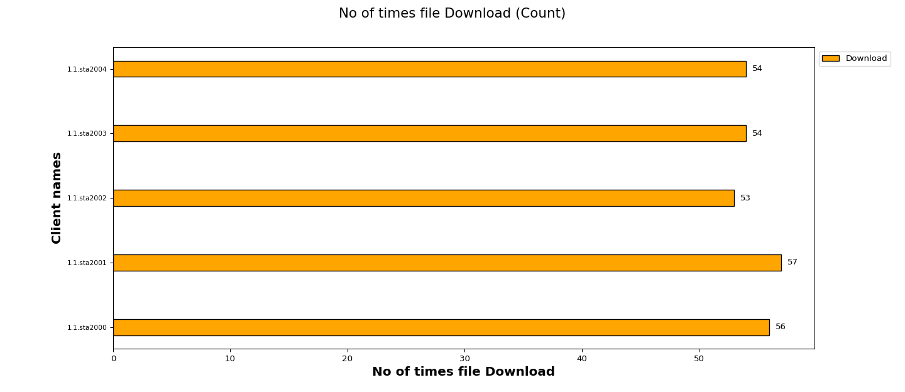
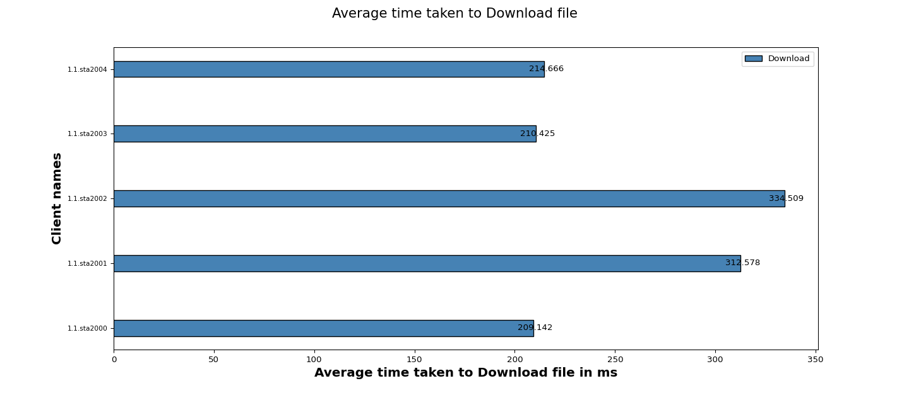

Test Setup Information
| Overall Setup Info For all Tests |
| DUT Model | Test_DUT | | DUT Firmware | NA | | SSID | NETGEAR_2G_Open | | Security | open | | No of Devices | 5 (Virtual Clients: 5, Windows: 0, Linux: 0, Mac: 0, Android: 0 ,iOS: 0) | | Test Duration (HH:MM:SS) | 00:13:00 |
|
Objective
The Candela mixed traffic test is designed to measure the access point performance andstability by running multiple traffic on real clients like Android, Linux, Windows, and IOSconnected to the access point. This test allows the user to choose multiple types of traffic likeclient capacity test, web browser test, video streaming test ping test. Along with theperformance measurements are client connection times, Station 4-Way Handshake time, DHCPtimes, and more. The expected behavior is for the AP to be able to handle all types of traffic onthe several stations (within the limitations of the AP specs) and Make sure all clients can run alltypes of traffic.
Traffic Details
| Sno |
Test Cases |
Test Duration |
Test Status |
| 1 |
Ping Test |
|
|
| 2 |
Quality Of Service(QOS) Test ['VO'] |
|
|
| 3 |
FTP Test |
1.0 minute |
Executed |
| 4 |
HTTP Test |
|
|
| 5 |
Multicast Test |
|
|
3. File Transfer Protocol (FTP) Test
Test Configuration
| Test Setup Information |
| Traffic Direction | Download | | File Size | 1MB | | File Location | /home/lanforge |
|
No.of times file Download
The below graph represents number of times a file Download for each client (WiFi) traffic. X-axis shows “No of times file Download” and Y-axis shows “Client names“.

Average time taken to Download file
The below graph represents average time taken to Download for each client (WiFi) traffic. X-axis shows “Average time taken to Download a file ” and Y-axis shows “Client names“.

Overall Results
| Clients |
MAC |
Channel |
SSID |
Mode |
No of times File downloaded |
Time Taken to Download file (ms) |
Bytes-rd (Mega Bytes) |
RX RATE (Mbps) |
| 1.1.sta2000 |
04:f0:21:89:c1:f4 |
11 |
NETGEAR_2G_Open |
802.11bgn-AC 20 2x2 |
56 |
209.142 |
56.0 |
7.7529 |
| 1.1.sta2001 |
04:f0:21:89:4d:f4 |
11 |
NETGEAR_2G_Open |
802.11bgn-AC 20 2x2 |
57 |
312.578 |
57.0 |
7.7362 |
| 1.1.sta2002 |
04:f0:21:89:fd:f4 |
11 |
NETGEAR_2G_Open |
802.11bgn-AC 20 2x2 |
53 |
334.509 |
53.0 |
7.9054 |
| 1.1.sta2003 |
04:f0:21:89:93:f4 |
11 |
NETGEAR_2G_Open |
802.11bgn-AC 20 2x2 |
54 |
210.425 |
54.0 |
7.8335 |
| 1.1.sta2004 |
04:f0:21:89:df:f4 |
11 |
NETGEAR_2G_Open |
802.11bgn-AC 20 2x2 |
54 |
214.666 |
54.0 |
7.8894 |
| Overall Info |
| contact | support@candelatech.com |
|